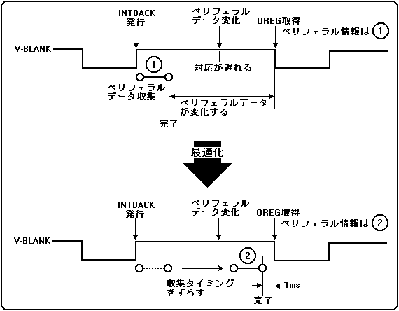

- V-BLANK-INまでにペリフェラルデータを揃える
- ペリフェラルでコントロールされるスプライト、スクロール面のパラメータを算出
- ３Ｄ演算等
- スプライト、ポリゴンを描画
- 表示
ペリフェラルデータ収集時間の最適化の目的は、V-BLANK-INに極力近いタイミングでペリフェラルデータを収集することです。
つまり、ペリフェラルデータの収集開始をV-BLANK-INに極力近づけ、ペリフェラルデータ収集からSH-2がペリフェラルデータを取得するまでを最短にすることです。
図3.5にペリフェラルデータ収集時間最適化の動作概要を示します。
図3.5 ペリフェラルデータ収集時間最適化の動作概要

●ペリフェラルデータ収集時間を最適化しない場合の動作
INTBACKコマンドは、V-BLANK-IN後、300μS以降、V-BLANK-OUT以前の期間に発行してください。これによりペリフェラルデータ収集開始をV-BLANK-OUTで、確実に開始することができます。SMPCがV-BLANK-OUTを検出するとペリフェラルデータ収集を開始します。
ペリフェラルデータ収集が完了した時点でINTBACKコマンドを終了します。
●ペリフェラルデータ収集時間を最適化しない場合の注意点
接続されたペリフェラルの種類や台数によってペリフェラルデータ収集完了タイミングは変化します。
一例として、サターン標準PAD２台のコンフィグレーションを考えてみると、V-BLANK-INよりもかなり早いタイミングでOREGに全てのペリフェラルデータが揃います。
このとき、SMPC割り込みを使用するとV-BLANK-INよりも早いタイミングでペリフェラルデータを取得できます。また、上記の様に使用するOREGが32本以下のコンフィグレーションの場合、SMPC割り込みを使用せずにV-BLANK-INタイミングで、
ペリフェラルデータを取得することもできます。
●ペリフェラルデータ収集時間を最適化する場合の動作
INTBACKコマンドは、V-BLANK-IN後、300μS以降、V-BLANK-OUT以前の期間に発行してください。これによりペリフェラルデータ収集開始をV-BLANK-OUTで、確実に開始することができます。ペリフェラルデータの収集時間を最適化する場合、SMPCは、
まず最適化せずにペリフェラルデータ収集を行い収集時間を測定します。ペリフェラルデータ収集開始タイミングは、ペリフェラルデータ収集時間を最適化しない場合と同様にSMPCがV-BLANK-OUTを検出したタイミングとなります。
次のフレームからは、測定時間に1msecのマージンを付加した時間をペリフェラルデータ収集時間とし、そのタイミングでペリフェラルデータを収集します。図3.5を参照。その後は、常にペリフェラルデータの収集時間を監視し、
データ収集時間を最適化しています。また、最適化後にタイムオーバが発生した場合には、再度、V-BLANK-OUTを開始タイミングとし、上記の最適化を実行します。
●ペリフェラルデータ収集時間を最適化する場合の注意点
接続されたペリフェラルの種類や台数によってペリフェラルデータ収集タイミングは変化します。ペリフェラルデータ収集時間の最適化を行うときは、対応するペリフェラルの種類、台数および組み合わせを明確にし、十分に評価し、
タイムオーバの発生を防いでください。
また、コンティニューをともなう場合は、コンティニュー要求の待ち時間もペリフェラルデータ収集時間として計測されております。従って、SMPC割り込み発生からコンティニュー要求までの時間をできるだけ短く、また、一定の時間で実行する様、
注意してください。